Seu jogo diz que seu espiríto é mensageiro, mas não se manifesta em transe.
Jogue novamente.
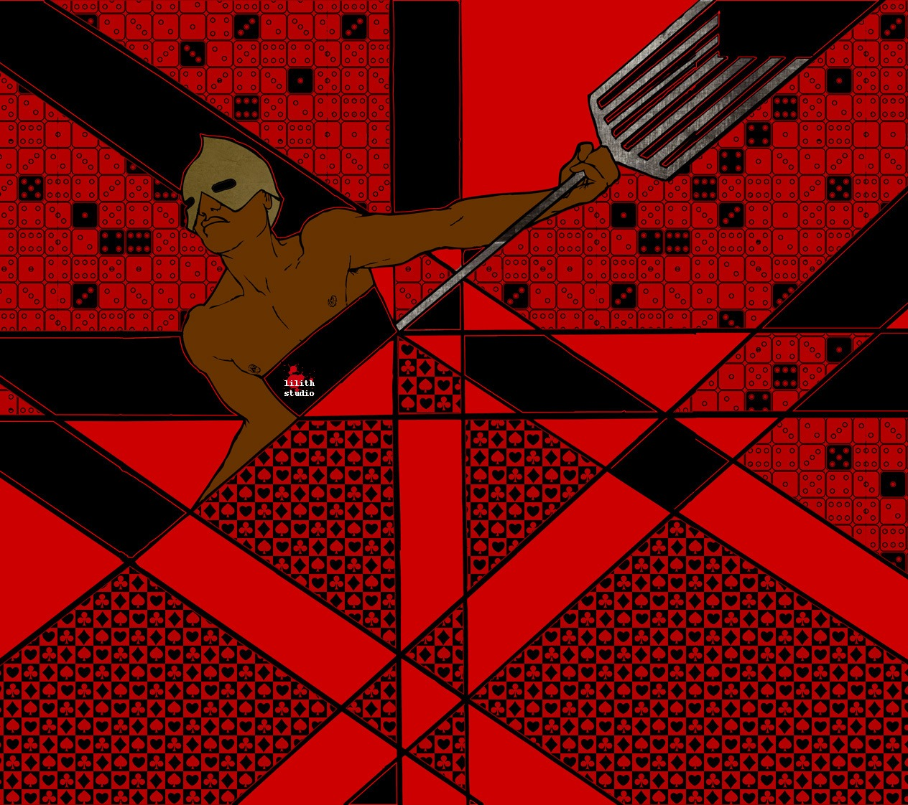
Exú
Conceito:
O que sua personagem faz, qual é a sua forma de ativismo diante de situações que ameaçam o meio ambiente,a justiça social, a diversidade cultural e a viabilidade econômica. Quem se manifestou em você foi Exu, um ESPIRITO NEGOCIADOR, que atua nas ações humanas de negociação(diplomacia, mediação de conflitos, comércio, trapaças, brincadeiras, comunicação) e nas dualidades da natureza (luz/sombra, noite/dia, caos/ordem). É o Orixá dos caminhos e da comunicação, mensageiro que circula entre o Orum (Morada dos orixás) e o Ayê (moradas dos humanos).
O que sua personagem faz, qual é a sua forma de ativismo diante de situações que ameaçam o meio ambiente,a justiça social, a diversidade cultural e a viabilidade econômica. Quem se manifestou em você foi Exu, um ESPIRITO NEGOCIADOR, que atua nas ações humanas de negociação(diplomacia, mediação de conflitos, comércio, trapaças, brincadeiras, comunicação) e nas dualidades da natureza (luz/sombra, noite/dia, caos/ordem). É o Orixá dos caminhos e da comunicação, mensageiro que circula entre o Orum (Morada dos orixás) e o Ayê (moradas dos humanos).
Cores: todas, incluindo preto e vermelho.
Dia: Segunda
Metais: ferro e bronze.
Elementos: todos, mas principalmente fogo.
Domínio: comunicação, viagens, estradas e encruzilhadas.
Ervas: folha de fogo (Clidemia octona).
Quizilas: cabeças e pés de qualquer bicho.
Comida: padê(farofa) de farinha de mandioca.
Tempero: Dendê
Ferramenta: Ogó (bastão em forma de falo com cabaças).
Toque: Ilú.
Poderes:
- Projeção astral: comunicação psíquica com outros espíritos
e pessoas vivas e viagem por outros planos de existência.
- Conjuração: convocação de outros espíritos para troca
de favores.
- Sincronicidade: manipulação de eventos, sorte e azar,
causa e feito.
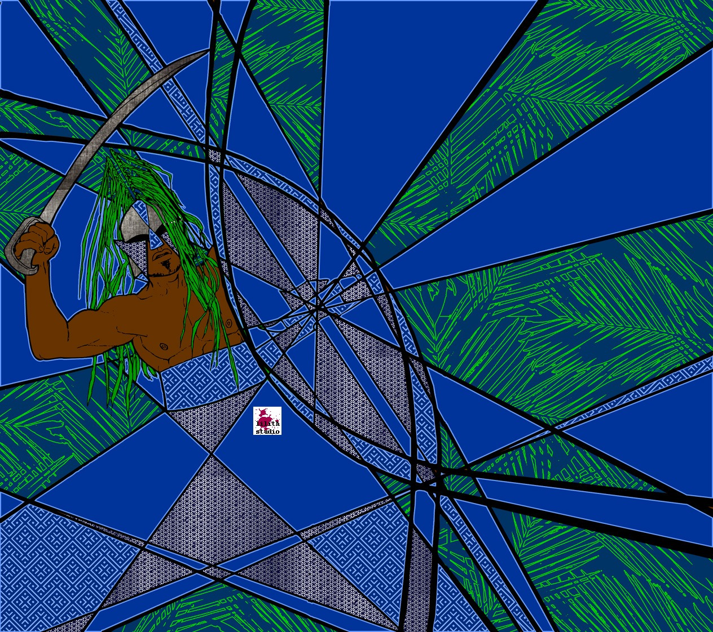
Ogum
Conceito:
O que sua personagem faz, qual é a sua forma de ativismo diante de situações que ameaçam o meio ambiente, a justiça social, a diversidade cultural e a viabilidade econômica. Quem se manifestou em você foi Ogum, um ESPÍRITO COMBATENTE que atua nas ações humanas de conflito (guerras,julgamentos,competições) e nos aspectos intempestivos da natureza(tempestades, terremotos,erupções). Orixá da guerra e da forja.
O que sua personagem faz, qual é a sua forma de ativismo diante de situações que ameaçam o meio ambiente, a justiça social, a diversidade cultural e a viabilidade econômica. Quem se manifestou em você foi Ogum, um ESPÍRITO COMBATENTE que atua nas ações humanas de conflito (guerras,julgamentos,competições) e nos aspectos intempestivos da natureza(tempestades, terremotos,erupções). Orixá da guerra e da forja.
Cor: Azulão e variantes; verde em alguns axés.
Dia: Quinta
Metal: Ferro
Elemento: Terra e metais.
Domínio: guerra, tecnologia, estradas e matas.
Adorno: folhas de palma desfiadas
Ervas: vence demanda (Justicia gendarusa)
Quizilas: Quiabo, feijão preto, camarão
Comida: eran petecê (carne fresca frita no azeite de dendê)
Tempero: dendê
Ferramenta: Adaga
Toque: adarrum
Poderes:
- Projeção astral: comunicação psíquica com outros espíritos
e pessoas vivas e viagem por outros planos de existência.
- Transmutação: manipulação de metais
- Empatia: manipulação de emoções
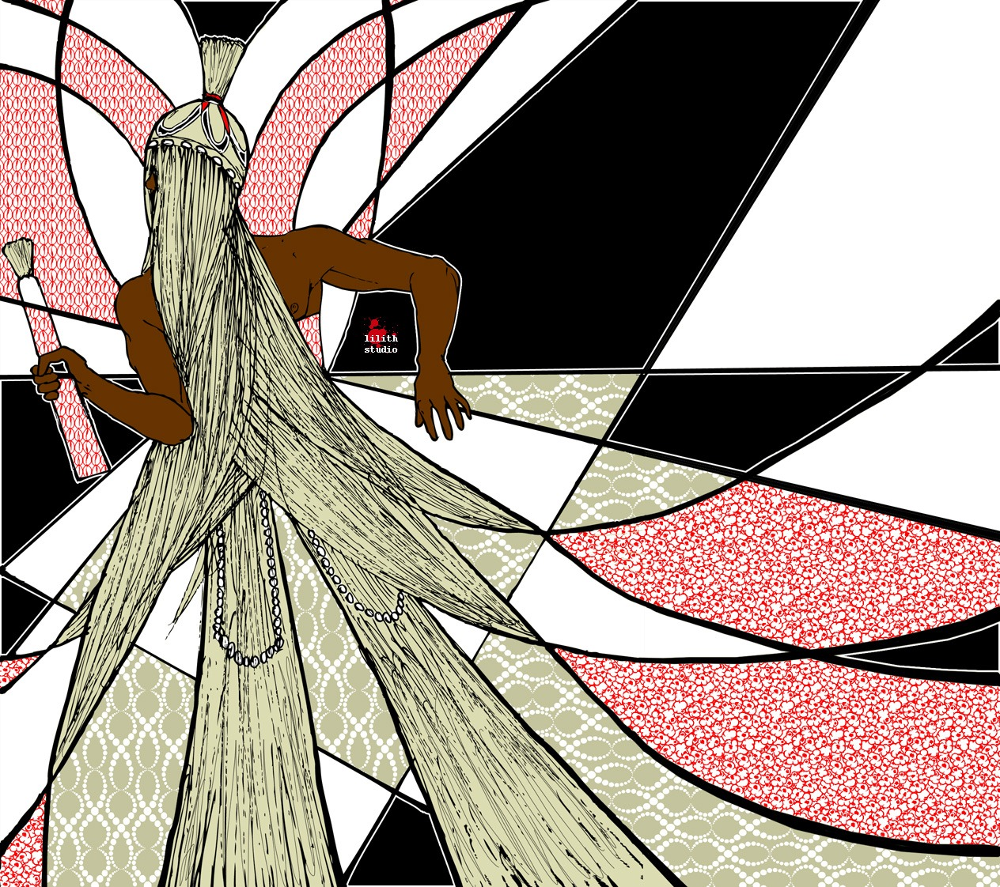
Omulu
Conceito:
O que sua personagem faz, qual é sua forma de ativismo diante de situações que ameaçam o meio ambiente, a justiça social, a diversidade cultural e a viabilidade econômica. Quem se manifestou em você foi Omulu, um ESPÍRITO PROVEDOR, que atua nas ações humanas de solidariedade (medicina, psicologia, caridade) e nos aspectos construtivos da natureza (fertilidade, crescimento). É o Orixá das doenças e da medicina.
O que sua personagem faz, qual é sua forma de ativismo diante de situações que ameaçam o meio ambiente, a justiça social, a diversidade cultural e a viabilidade econômica. Quem se manifestou em você foi Omulu, um ESPÍRITO PROVEDOR, que atua nas ações humanas de solidariedade (medicina, psicologia, caridade) e nos aspectos construtivos da natureza (fertilidade, crescimento). É o Orixá das doenças e da medicina.
Cores: Preto, branco e vermelho.
Dia: Segunda.
Metais: Estanho e zinco.
Elementos: Terra.
Domínio: Saúde e morte, hospitais e cemitério.
Ervas: Canela de velho (Miconia albicans).
Quizilas: Pipoca, feijão preto, siri, camarão, abacaxi.
Comida: deburu (pipoca estourada em areia da praia enfeitada com
fatias de coco); tutu (purê) de feijão.
Tempero: Dendê.
Ferramenta: Xaxará (bastão) ou lança.
Toque: Opanijé.
Poderes:
- Projeção Astral: Comunicação psíquica com outros espíritos
e pessoas vivas e viagem por outros planos de existência.
- Esconjuração: Detecção e quebra de outros efeitos mágicos.
- Vitalidade: Diagnóstico e tratamento de ferimentos e doenças
agudas e infecto-contagiosas.
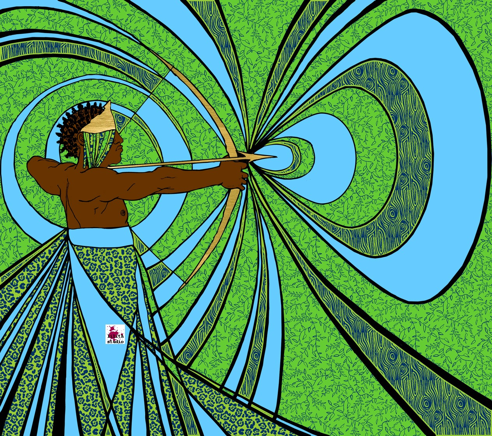
Oxóssi
Conceito:
O que sua personagem faz, qual é a sua forma de ativismo diante de situações que ameaçam o meio ambiente, a justiça social, a diversidade cultural e a viabilidade econômica. Quem se manifestou em você foi Oxóssi, um ESPÍRITO PROVEDOR, que atua nas ações humanas de solidariedade (medicina, psicologia, caridade) e nos aspectos construtivos da natureza (fertilidade, crescimento). Orixá da caça, das matas, da agricutura e da fartura.
O que sua personagem faz, qual é a sua forma de ativismo diante de situações que ameaçam o meio ambiente, a justiça social, a diversidade cultural e a viabilidade econômica. Quem se manifestou em você foi Oxóssi, um ESPÍRITO PROVEDOR, que atua nas ações humanas de solidariedade (medicina, psicologia, caridade) e nos aspectos construtivos da natureza (fertilidade, crescimento). Orixá da caça, das matas, da agricutura e da fartura.
Cor: Azul turquesa ou verda
Dia: Quinta
Metal: Latão
Elemento: Ar e terra
Domínio: cultivos, caça , matas e campos.
Ervas: Panacéia (Gomphrena arborescens)
Quizilas: mel, miúdos, bucho.
Comida: abadô, (arrumação) de axoxô (milho vermelho cozido)
decorado com fatias de coco, frutas e feijão fradinho torrado.
Tempero: dendê
Ferramenta: ofá (arco e flecha)
Toque: agueré
Poderes:
- Projeção astral: comunicação psíquica com outros espíritos
e pessoas vivas e viagem por outros planos de existência.
- Transmutação: manipulação de alimentos.
- Sincronicidade: manipulação de eventos, sorte e azar,
causa e feito.
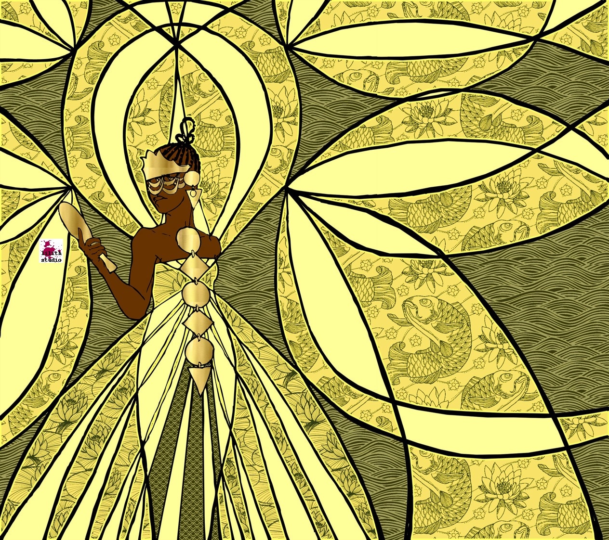
Oxum
Conceito:
O que sua personagem faz, qual é sua forma de ativismo diante de situações que ameaçam o meio ambiente, a justiça social, a diversidade cultural e a viabilidade econômica. Quem se manifestou em você foi Oxum, um ESPÍRITO PROVEDOR, que atua nas ações humanas de solidariedade (medicina, psicologia, caridade) e nos aspectos construtivos da natureza (fertilidade, crescimento). É o Orixá da riqueza, da fecundidade e da beleza, mãe do ouro e das águas calmas.
O que sua personagem faz, qual é sua forma de ativismo diante de situações que ameaçam o meio ambiente, a justiça social, a diversidade cultural e a viabilidade econômica. Quem se manifestou em você foi Oxum, um ESPÍRITO PROVEDOR, que atua nas ações humanas de solidariedade (medicina, psicologia, caridade) e nos aspectos construtivos da natureza (fertilidade, crescimento). É o Orixá da riqueza, da fecundidade e da beleza, mãe do ouro e das águas calmas.
Cores: Dourado e amarelo e variantes.
Metais: Ouro.
Elementos: Água.
Domínio: Amor, fertilidade, rios calmos e águas doces.
Ervas: Oxibatá (Nymphaea).
Quizilas: Passarinha (baço), tangerina.
Comida: Omolocum (feijão fradinho com camarões e ovos
cozidos descascados) e ipeté (purê de inhame, camarão e gengibre)
Tempero: Dendê.
Ferramenta: Abebê (espelho).
Toque: Ijexá.
Poderes:
- Projeção Astral: Comunicação psíquica com outros espíritos
e pessoas vivas e viagem por outros planos de existência.
- Empatia: Manipulação de emoções.
- Vitalidade: Diagnóstico e tratamento de ferimentos e doenças
agudas e infecto-contagiosas.
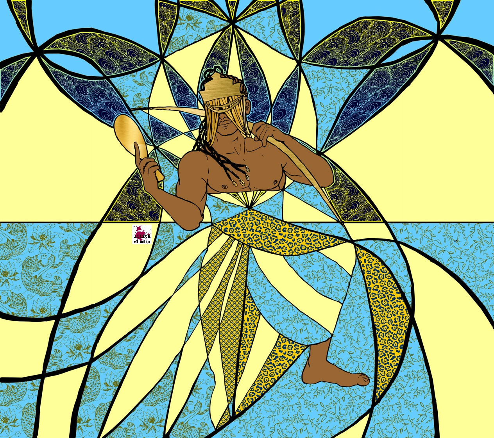
Logun-Edê
Conceito:
O que sua personagem faz, qual é a sua forma de ativismo diante de situações que ameaçam o meio ambiente, a justiça social, a diversidade cultural e a viabilidade econômica. Quem se manifestou em você foi Logun-Edê, em ESPIRÍTO NEGOCIADOR, que atua nas ações humanas de negociação (diplomacia, mediação de conflitos, comércio, trapaças, brincadeiras, comunicação) e nas dualidades da natureza (luz/sombra, noite/dia, caos/ordem). Orixá da caça, da pesca e da juventude, filho de Oxóssi e Oxum, ponte entre masculino e feminino.
O que sua personagem faz, qual é a sua forma de ativismo diante de situações que ameaçam o meio ambiente, a justiça social, a diversidade cultural e a viabilidade econômica. Quem se manifestou em você foi Logun-Edê, em ESPIRÍTO NEGOCIADOR, que atua nas ações humanas de negociação (diplomacia, mediação de conflitos, comércio, trapaças, brincadeiras, comunicação) e nas dualidades da natureza (luz/sombra, noite/dia, caos/ordem). Orixá da caça, da pesca e da juventude, filho de Oxóssi e Oxum, ponte entre masculino e feminino.
Cor: Azul turquesa e Amarelo
Dia: Quinta
Metal: Latão e Ouro
Elemento: Terra e água.
Domínio: Beleza, pesca, caça, matas e rios.
Ervas: Panacéia (Gomphrena arvorescens) e oxibatá (Nymphaea)
Quizilas: Mel, Bucho, miúdos, baço e tangerina.
Comida: feijão fradinho, axoxô (milho vermelho cozido),
omolocum (feijão fradinho com camarões e ovos cozidos
descascados), ipeté (purê de inhame,camarão e gengibre)
Tempero: dendê
Ferramenta: Abebê (espelho) e Ofá (arco e flecha)
Toque: Agueré e Ijexá
Poderes:
- Projeção astral: comunicação psíquica com outros espíritos
e pessoas vivas e viagem por outros planos de existência.
- Empatia: manipulação de emoções
- Sincronicidade: manipulação de eventos, sorte e azar,
causa e efeito.
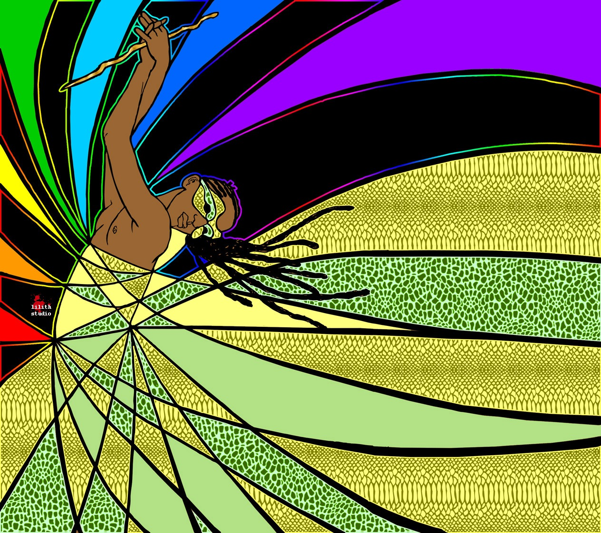
Oxumarê
Conceito:
O que sua personagem faz, qual é sua forma de ativismo diante de situações que ameaçam o meio ambiente, a justiça social, a diversidade cultural e a viabilidade econômica. Quem se manifestou em você foi Oxumarê, um ESPÍRITO REVELADOR, que atua nas ações humanas de criatividade (artes, ciências, tecnologias) e nos aspectos transformadores da natureza (adaptações, evolução, morte). É o Orixá da transformação, da inovação e da adaptação.
O que sua personagem faz, qual é sua forma de ativismo diante de situações que ameaçam o meio ambiente, a justiça social, a diversidade cultural e a viabilidade econômica. Quem se manifestou em você foi Oxumarê, um ESPÍRITO REVELADOR, que atua nas ações humanas de criatividade (artes, ciências, tecnologias) e nos aspectos transformadores da natureza (adaptações, evolução, morte). É o Orixá da transformação, da inovação e da adaptação.
Cores: Preto e amarelo ou verde e amarelo e arco-íris.
Dia: Terça.
Elementos: Terra e água.
Domínio: Artes, transformações e movimentos, arco-íris, chuva.
Ervas: Jibóia (epipremnum pinnatum).
Quizilas: Abacaxi e carambola.
Comida: Batata doce amassada em forma de cobra e feijão fradinho.
Tempero: Dendê.
Ferramenta: Lança com cobras.
Toque: Sató.
Poderes:
- Projeção Astral: Comunicação psíquica com outros espíritos
e pessoas vivas e viagem por outros planos de existência.
- Cognição: Clarividências, sonhos, clauriaudiências,
psicografia.
- Ilusão: Manipulação de sentidos.
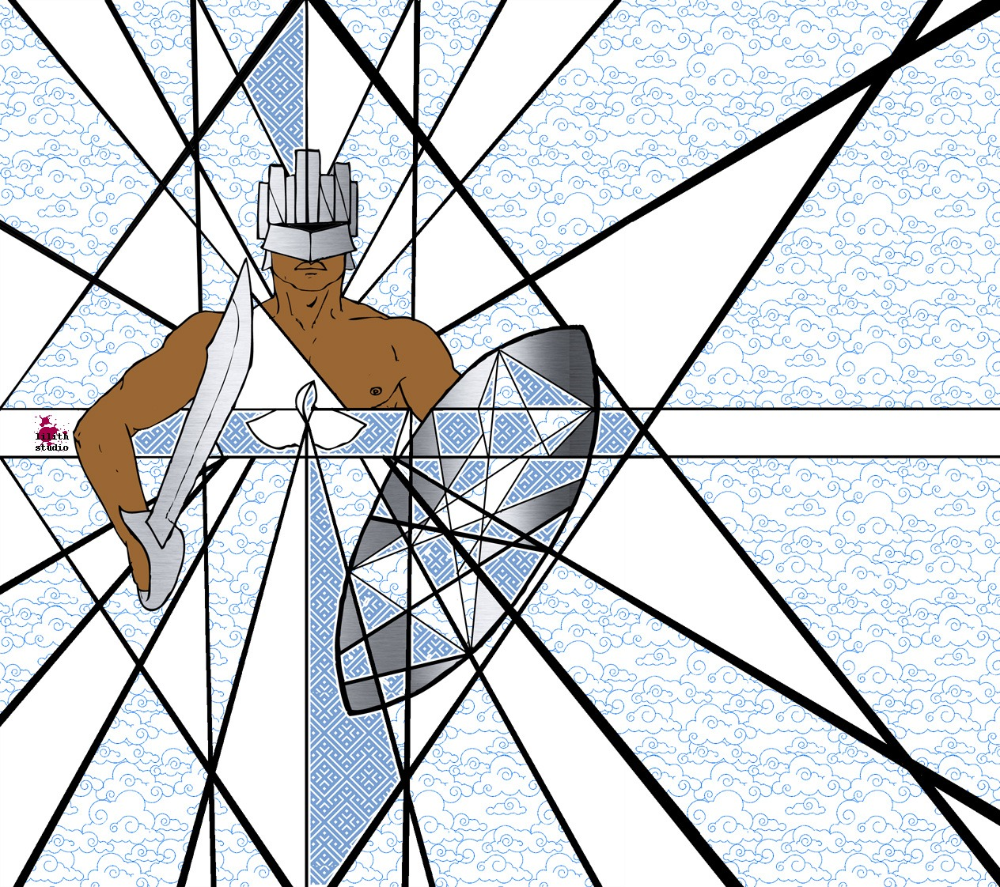
Oxaguiã
Conceito:
O que sua personagem faz, qual é a sua forma de ativismo diante de situações que ameaçam o meio ambiente, a justiça social, a diversidade cultural e a viabilidade econômica. Quem se manifestou em você foi Oxaguiã, um ESPÍRITO NEGOCIADOR, que atua nas ações humanas de negociação (diplomacia,mediação de conflitos, comércio, trapaças, brincadeiras, comunicação) e nas dualidades da natureza (luz/sombra, noite/dia, caos/ordem). Orixá da cultura material e das criações humanas, inventor do pilão que transforma o inhame em alimento.
O que sua personagem faz, qual é a sua forma de ativismo diante de situações que ameaçam o meio ambiente, a justiça social, a diversidade cultural e a viabilidade econômica. Quem se manifestou em você foi Oxaguiã, um ESPÍRITO NEGOCIADOR, que atua nas ações humanas de negociação (diplomacia,mediação de conflitos, comércio, trapaças, brincadeiras, comunicação) e nas dualidades da natureza (luz/sombra, noite/dia, caos/ordem). Orixá da cultura material e das criações humanas, inventor do pilão que transforma o inhame em alimento.
Cor: Branco e Azul Claro
Dia: Sexta
Metal: Aço e Prata
Elemento: Ar e água
Domínio: Cultura material, céu, nuvens e sol.
Ervas: Ipê branco (Tabebuia roseo-alba)
Quizilas: Abóbora
Comida: Inhame pilado servido em louça branca.
Tempero: Azeite de oliva ou banha.
Ferramenta: Adaga e escudo
Toque: adarrum
Poderes:
- Projeção astral: comunicação psíquica com outros espíritos
e pessoas vivas e viagem por outros planos de existência.
- Empatia: manipulação de emoções
- Esconjuração: detecçãp e quebra de outros efeitos mágicos
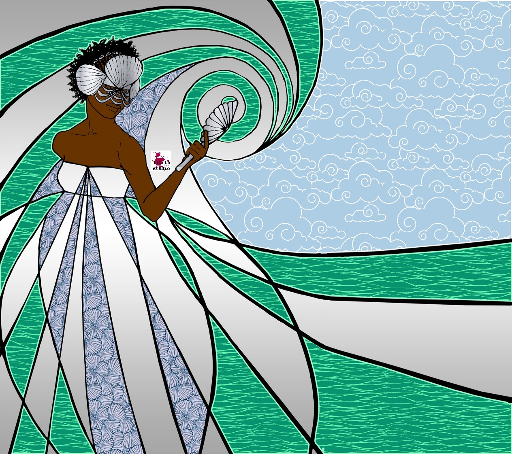
Yemanjá
Conceito:
O que sua personagem faz, qual é sua forma de ativismo diante de situações que ameaçam o meio ambiente, a justiça social, a diversidade cultural e a viabilidade econômica. Quem se manifestou em você foi Yemanjá, um ESPÍRITO PROVEDOR, que atua nas ações humanas de solidariedade (medicina, psicologia, caridade) e nos aspectos construtivos da natureza (fertilidade, crescimento). É o Orixá das águas salgadas, da família, da maternidade e das cabeças dos humanos (ori).
O que sua personagem faz, qual é sua forma de ativismo diante de situações que ameaçam o meio ambiente, a justiça social, a diversidade cultural e a viabilidade econômica. Quem se manifestou em você foi Yemanjá, um ESPÍRITO PROVEDOR, que atua nas ações humanas de solidariedade (medicina, psicologia, caridade) e nos aspectos construtivos da natureza (fertilidade, crescimento). É o Orixá das águas salgadas, da família, da maternidade e das cabeças dos humanos (ori).
Cores: Azul ou verde claros, branco, cristal e prateado.
Dia: Sábado.
Metais: Prata.
Elementos: Água.
Domínio: Família, lideranças, mares e oceanos.
Ervas: Macaçá (Aeollanthus suaveolens).
Quizilas: Camarão.
Comidas: Ebôya (fava ou milho cozifo e refogado com cebola,
camarão, azeite de dendê).
Tempero: Dendê.
Ferramenta: Abebê (espelho).
Toque: Ilu.
Poderes:
- Projeção Astral: Comunicação psíquica com outros espíritos
e pessoas vivas e viagem por outros planos de existência.
- Empatia: Manipulação de emoções.
- Esconjuração: Detecção e quebra de possessões espirituais.
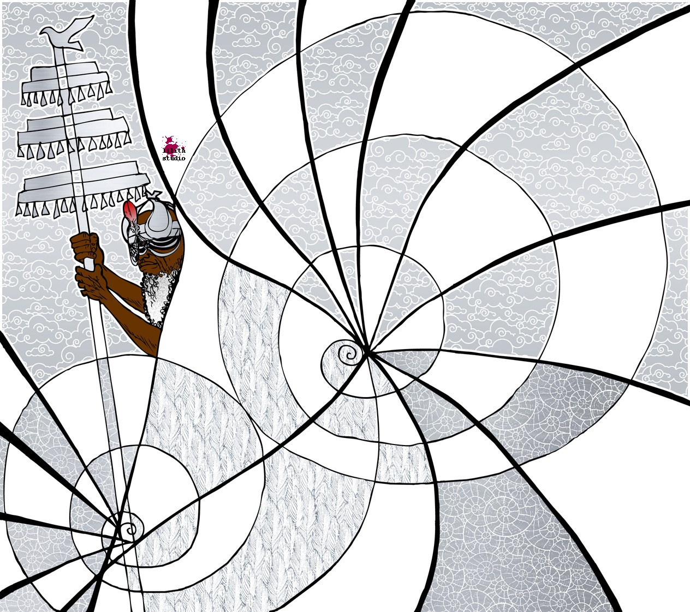
Oxalufã
Conceito:
O que sua personagem faz, qual é a sua forma de ativismo diante de situações que ameaçam o meio ambiente, a justiça social, a diversidade cultural e a viabilidade econômica. Quem se manifestou em você foi Ogum, um ESPÍRITO REVELADOR, que atua nas ações humanas de criatividade (artes, ciências, tecnologias) e nos aspectos transformadores da natureza (adaptações, evolução, morte). Orixá da vida e da morte, senhor dos segredos e da sabedoria.
O que sua personagem faz, qual é a sua forma de ativismo diante de situações que ameaçam o meio ambiente, a justiça social, a diversidade cultural e a viabilidade econômica. Quem se manifestou em você foi Ogum, um ESPÍRITO REVELADOR, que atua nas ações humanas de criatividade (artes, ciências, tecnologias) e nos aspectos transformadores da natureza (adaptações, evolução, morte). Orixá da vida e da morte, senhor dos segredos e da sabedoria.
Cor: Branco e prateado
Dia: Sexta
Metal: Aço e Prata
Elemento: Ar e água
Domínio: Vida e morte, mistérios, céu, nuvens e ar.
Ervas: Manjericão Branco (Ocimum basilicum)
Quizilas: Abóbora
Comida: comidas brancas, preferência por milho branco cozido e sem
tempero servido em louças brancas.
Tempero: Azeite de Oliva ou banha.
Ferramenta: Opaxorô (cajado)
Toque: Ibi
Poderes:
- Projeção astral: comunicação psíquica com outros espíritos
e pessoas vivas e viagem por outros planos de existência.
- Empatia: manipulação de emoções
- Cognição: clarividências, sonhos, clariaudiências,
psicografias.
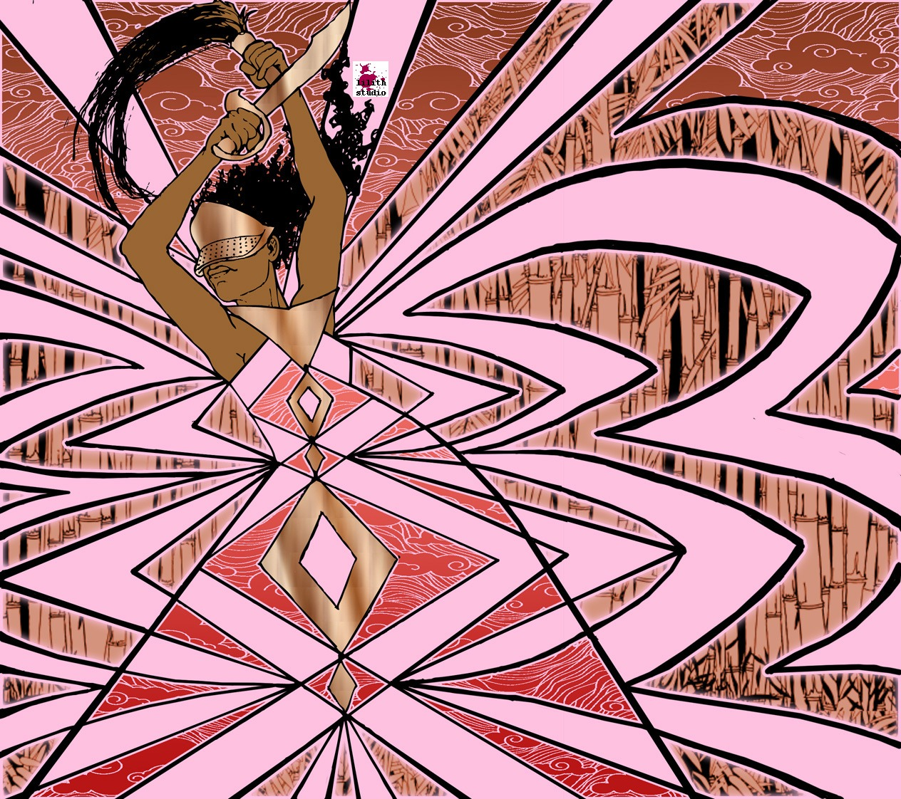
Oyá-Iansã
Conceito:
O que sua personagem faz, qual é sua forma de ativismo diante de situações que ameaçam o meio ambiente, a justiça social, a diversidade cultural e a viabilidade econômica. Quem se manifestou em você foi Oyá-Iansã, um ESPÍRITO COMBATENTE, que atua nas ações humanas de conflito (guerras, julgamentos, competições) e nos aspectos intempestivos da natureza (tempestades, terremotos, erupções). É o Orixá dos ventos e tempestades, senhora dos espíritos dos mortos (eguns) e das paixões.
O que sua personagem faz, qual é sua forma de ativismo diante de situações que ameaçam o meio ambiente, a justiça social, a diversidade cultural e a viabilidade econômica. Quem se manifestou em você foi Oyá-Iansã, um ESPÍRITO COMBATENTE, que atua nas ações humanas de conflito (guerras, julgamentos, competições) e nos aspectos intempestivos da natureza (tempestades, terremotos, erupções). É o Orixá dos ventos e tempestades, senhora dos espíritos dos mortos (eguns) e das paixões.
Cores: Vermelho e variantes, coral, rosa.
Dia: Quarta.
Metais: Cobre e prata.
Elementos: Ar em moviento e fogo.
Domínio: Paixões, intempéries, bambuzais, ventanias, cemitérios.
Ervas: Erva-prata (Paronychia).
Quizilas: Abóbora, carneiro.
Comida: Acarajé (bolinho redondo de massa de feijão fradinho
frita em dendê).
Tempero: Dendê.
Ferramenta: Adaga e eruquerê ou eruxim (espanta-moscas
de rabo de cavalo)
Toque: Adarô.
Poderes:
- Projeção Astral: Comunicação psíquica com outros espíritos
e pessoas vivas e viagem por outros planos de existência.
- Esconjuração: Exorcismo de espíritos.
- Psicocinese: Manipulação de eletricidade e deslocamento de ar.
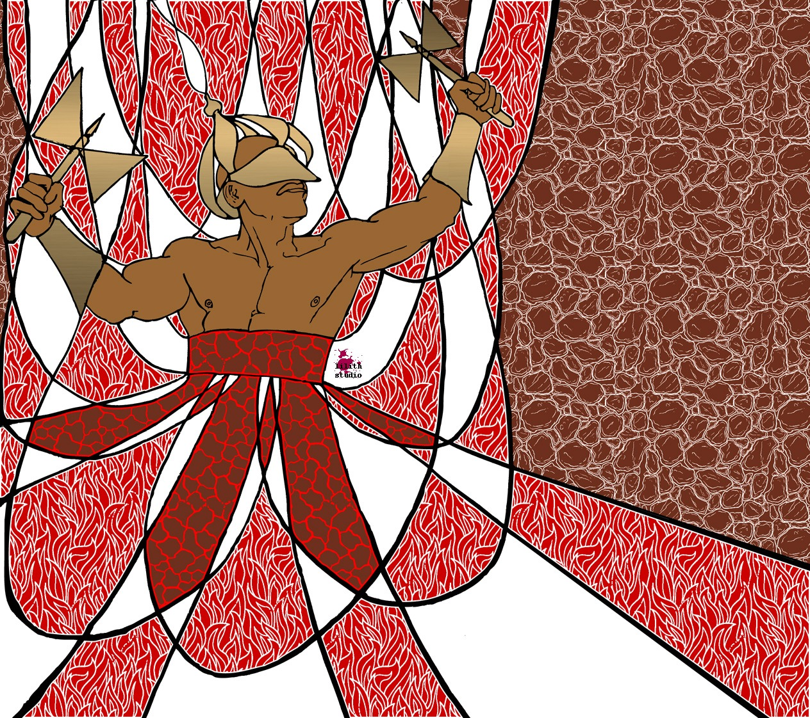
Xangô
Conceito:
O que sua personagem faz, qual é a sua forma de ativismo diante de situações que ameaçam o meio ambiente, a justiça social, a diversidade cultural e a viabilidade econômica. Quem se manifestou em você foi Ogum, um ESPÍRITO COMBATENTE que atua nas ações humanas de conflito (guerras,julgamentos,competições) e nos aspectos intempestivos da natureza(tempestades, terremotos,erupções). Orixá das trovoadas, dos vulcões e da lava, das pedreiras, o rei que aplica a justiça e provê abundância.
O que sua personagem faz, qual é a sua forma de ativismo diante de situações que ameaçam o meio ambiente, a justiça social, a diversidade cultural e a viabilidade econômica. Quem se manifestou em você foi Ogum, um ESPÍRITO COMBATENTE que atua nas ações humanas de conflito (guerras,julgamentos,competições) e nos aspectos intempestivos da natureza(tempestades, terremotos,erupções). Orixá das trovoadas, dos vulcões e da lava, das pedreiras, o rei que aplica a justiça e provê abundância.
Cor: Branco e vermelho, ou branco e marrom.
Dia: Quarta
Metal: Bronze
Elemento: Fogo e Terra
Domínio: Justiça, lideranças, vulcões e pedreiras.
Ervas: Elevante (Mentha viridis)
Quizilas: Pipoca, tangerina, siri, feijão preto.
Comida: Amalá (quiabo cortado, cebola, camarão)
Tempero: dendê
Ferramenta: Oxé (machadinha de gume duplo)
Toque: Alujá
Poderes:
- Projeção astral: comunicação psíquica com outros espíritos
e pessoas vivas e viagem por outros planos de existência.
- Empatia: manipulação de emoções
- Psicocinese: manipulação de fogo e movimento (telecinese)
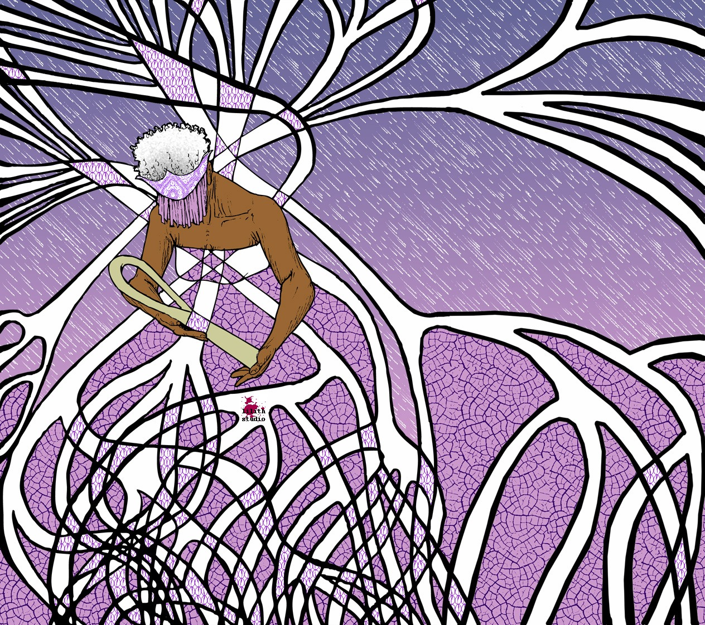
Nanã
Conceito:
O que sua personagem faz, qual é sua forma de ativismo diante de situações que ameaçam o meio ambiente, a justiça social, a diversidade cultural e a viabilidade econômica. Quem se manifestou em você foi Nanã, um ESPÍRITO REVELADOR, que atua nas ações humanas de criatividade (artes, ciências, tecnologias) e nos aspectos transformadoes da natureza (adaptações, avolução, morte). Orixá da lama a partir da qual Oxalufã criou a vida humana, a que acolhe os recém mortos e os encaminha para uma nova vida.
O que sua personagem faz, qual é sua forma de ativismo diante de situações que ameaçam o meio ambiente, a justiça social, a diversidade cultural e a viabilidade econômica. Quem se manifestou em você foi Nanã, um ESPÍRITO REVELADOR, que atua nas ações humanas de criatividade (artes, ciências, tecnologias) e nos aspectos transformadoes da natureza (adaptações, avolução, morte). Orixá da lama a partir da qual Oxalufã criou a vida humana, a que acolhe os recém mortos e os encaminha para uma nova vida.
Cores: Branco e roxo ou branco e azul.
Dia: Terça.
Metais: Repele todos.
Elementos: Terra e água.
Domínio: Vida e morte, lama, pântanos, águas paradas.
Ervas: Mostarda (Brassica, Sinapis).
Quizilas: Siri, camarão.
Comida: Folha de mostarda refogada.
Tempero: Dendê.
Ferramenta: Ibiri (bastão curvo).
Toque: Ilu.
Poderes:
- Projeção Astral: Comunicação psíquica com outros espíritos
e pessoas vivas e viagem por outros planos de existência.
- Conjuração: Controle de espíritos desencarnados.
- Cognição: Clarividências, sonhos, clariaudiências,
psicografia.
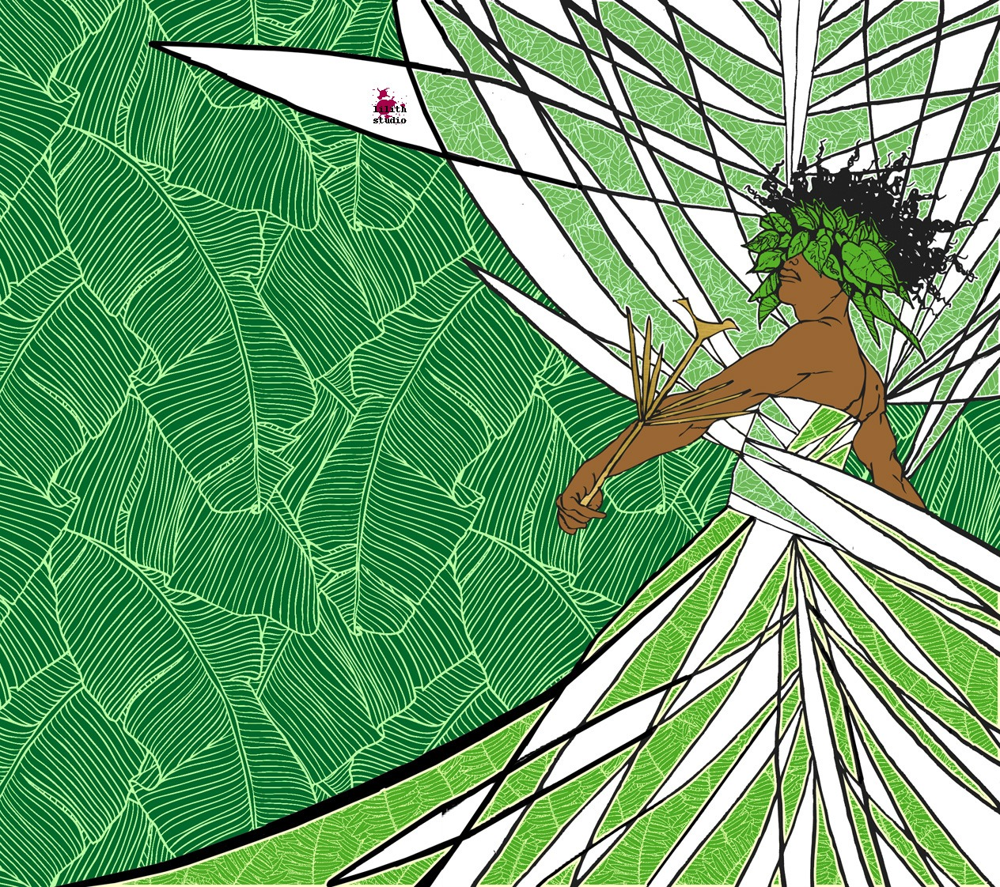
Ossãe
Conceito:
O que sua personagem faz, qual é a sua forma de ativismo diante de situações que ameaçam o meio ambiente, a justiça social, a diversidade cultural e a viabilidade econômica. Quem se manifestou em você foi Ogum, um ESPÍRITO PROVEDOR, que atua nas ações humanas de solidariedade (medicina, psicologia, cariade) e nos aspectos construtivos da natureza (fertilidade, crescimento). Orixá das ervas e seus poderes (ewé) mágicos e curativos.
O que sua personagem faz, qual é a sua forma de ativismo diante de situações que ameaçam o meio ambiente, a justiça social, a diversidade cultural e a viabilidade econômica. Quem se manifestou em você foi Ogum, um ESPÍRITO PROVEDOR, que atua nas ações humanas de solidariedade (medicina, psicologia, cariade) e nos aspectos construtivos da natureza (fertilidade, crescimento). Orixá das ervas e seus poderes (ewé) mágicos e curativos.
Cor: Branco e verde claro
Dia: Quinta
Metal: Ferro, prata, bronze, estanho e latão
Elemento: Terra e ar.
Domínio: Saúde, fármacos, folhas e matas.
Adorno: folhas
Ervas: Peregum (Dracena)
Quizilas: Abacaxi
Comida: Feijão, farofa e fumo de rolo.
Tempero: dendê
Ferramenta: Folhas, Opaorum (haste com folhas e passáro)
Toque: Agueré
Poderes:
- Projeção astral: comunicação psíquica com outros espíritos
e pessoas vivas e viagem por outros planos de existência.
- Transmutação: manipulação de metais
- Vitalidade: diagnóstico e tratamento de ferimentos e doenças
crônicas e hereditárias.
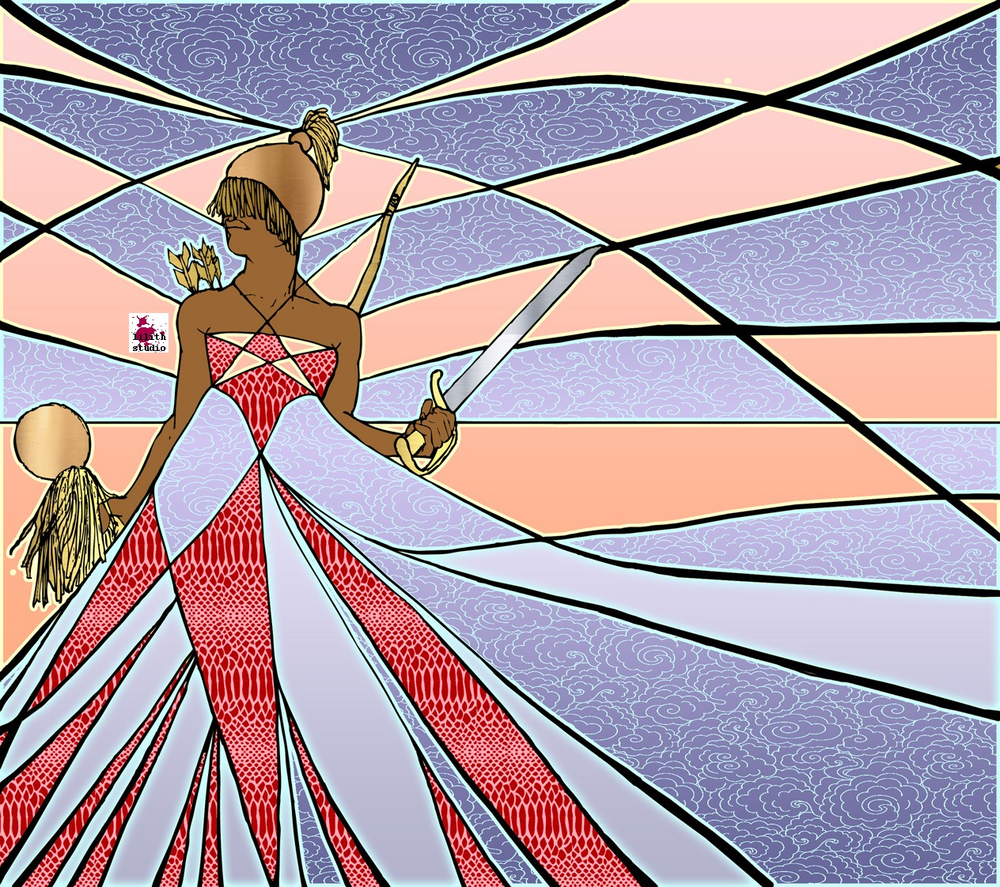
Ewá
Conceito:
O que sua personagem faz, qual é sua forma de ativismo diante de situações que ameaçam o meio ambiente, a justiça social, a diversidade cultural e a viabilidade econômica. Quem se manifestou em você foi Ewá, um ESPÍRITO REVELADOR, que atua nas ações humanas de criatividade (artes, ciências, tecnologias) e nos aspectos transformadores da natureza (adaptaç]ões, evolução, morte). Orixá das possibilidades e do conhecimento, serpente dos mistérios e senhora do céu cor de rosa.
O que sua personagem faz, qual é sua forma de ativismo diante de situações que ameaçam o meio ambiente, a justiça social, a diversidade cultural e a viabilidade econômica. Quem se manifestou em você foi Ewá, um ESPÍRITO REVELADOR, que atua nas ações humanas de criatividade (artes, ciências, tecnologias) e nos aspectos transformadores da natureza (adaptaç]ões, evolução, morte). Orixá das possibilidades e do conhecimento, serpente dos mistérios e senhora do céu cor de rosa.
Cores: Coral, rosa, vermelho.
Dia: Terça.
Metais: Ouro, cobre e prata.
Elementos: Ar e água.
Domínio: Conhecimento, criatividade, neblinas e cemitérios.
Ervas: Língua de cobra (Ophioglossum).
Quizilas: Quiabo, abóbora, abacaxi.
Comida: Feijão Fradinho e farofa de ovo.
Tempero: Dendê.
Ferramenta: Lança ou ofá e adaga e cabaça.
Toque: Sató.
Poderes:
- Projeção Astral: Comunicação psíquica com outros espíritos
e pessoas vivas e viagem por outros planos de existência.
- Conjuração: Convocação de outros espíritos para troca de favores.
- Sincronidade: Manipulação de eventos, sorte e azar; causa - e efeito.
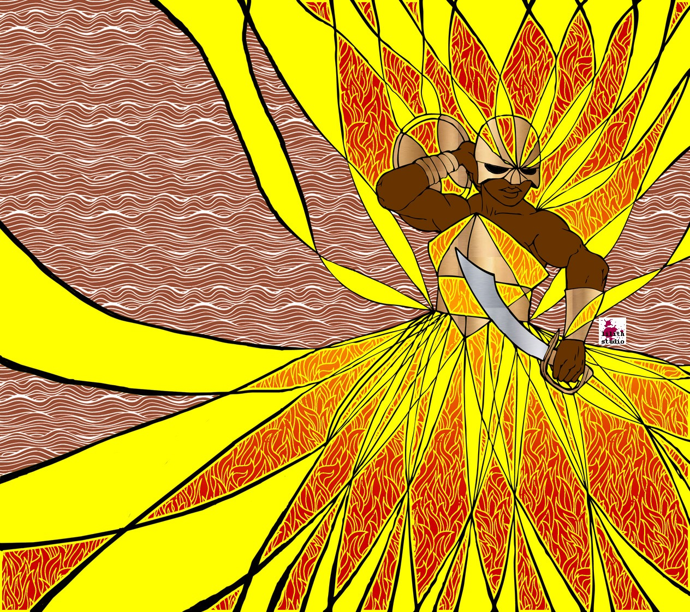
Obá
Conceito:
O que sua personagem faz, qual é sua forma de ativismo diante de situações que ameaçam o meio ambiente, a justiça social, a diversidade cultural e a viabilidade econômica. Quem se manifestou em você foi Obá, um ESPÍRITO COMBATENTE, que atua nas açõs humanas de conflito (guerras, julgamentos, competições) e nos aspectos intempestivos da natureza (tempestades, terremotos, arupções). orixá do amor conjugal da lealdade e do sucesso profissional, senhora das águas revoltas.
O que sua personagem faz, qual é sua forma de ativismo diante de situações que ameaçam o meio ambiente, a justiça social, a diversidade cultural e a viabilidade econômica. Quem se manifestou em você foi Obá, um ESPÍRITO COMBATENTE, que atua nas açõs humanas de conflito (guerras, julgamentos, competições) e nos aspectos intempestivos da natureza (tempestades, terremotos, arupções). orixá do amor conjugal da lealdade e do sucesso profissional, senhora das águas revoltas.
Cores: Amarelo, vermelho e larajas.
Dia: Quarta.
Metais: Cobre, platina e prata.
Elementos: Fogo.
Domínio: Carreiras, casamentos, amizades, fogo e rios revoltos.
Ervas: Tanaceto (Tanacetum vulgare).
Quizilas: Abóbora.
Comida: Milho cozido com amalá (quiabo cortado, cebola, camarão).
Tempero: Dendê.
Ferramenta: Adaga e escudo.
Toque: Ilu e Adarrum.
Poderes:
- Projeção Astral: Comunicação psíquica com outros espíritos
e pessoas vivas e viagem por outros planos de existência.
- Empatia: Manipulação de emoções.
- Psicocinese: Manipuçlação de fogo ou água.
Faça uma escolha.
Clique em opções para poder fazer uma escolha.